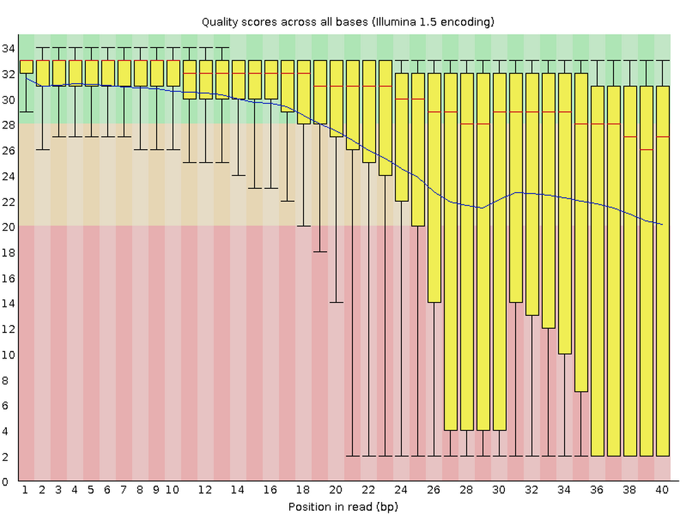

fastqc <fastq-file>Read QC with FastQC
And the distinction between program-specific scripts and an overarching runner/master script
Under construction
This page is still under construction.
Overview & setting up
So far, we have covered all the building blocks to be able to run command-line programs at OSC:
- Basics of a supercomputer and of OSC specifically
- Unix (Bash) shell basics to work at a supercomputer, and learn the language used in our scripts
- The bells and whistles needed to turn our commands into a shell script
- Loading and installing the software (command-line programs) that we want to run
- Working with the Slurm job scheduler, so we can submit scripts as batch jobs
- The ability to loop over commands, so that we can submit many scripts at once
With these skills, it’s relatively straightforward to create and submit scripts that run command-line programs to analyze our genomics data. In this session, we’ll apply them to run FastQC.
FastQC: A program for quality control of FASTQ files
FastQC is one the most ubiquitous pieces of genomics software. It allows you to assess the overall quality of, and potential problems with, the reads in your FASTQ files. It produces visualizations and assessments of for statistics such as per-base quality (below) and adapter content. Running FastQC or an equivalent program should always be the first analysis step after you receive your sequences.
For each FASTQ file, FastQC outputs an HTML file that you can open in your browser and which has about a dozen graphs showing different QC metrics. The most important one is the per-base quality score graph shown below.


Start VS Code and open your folder
As always, we’ll be working in VS Code — if you don’t already have a session open, see below how to do so.
Make sure to open your /fs/ess/PAS0471/<user>/rnaseq_intro dir, either by using the Open Folder menu item, or by clicking on this dir when it appears in the Welcome tab.
Starting VS Code at OSC - with a Terminal (Click to expand)
Log in to OSC’s OnDemand portal at https://ondemand.osc.edu.
In the blue top bar, select
Interactive Appsand then near the bottom of the dropdown menu, clickCode Server.In the form that appears on a new page:
- Select an appropriate OSC project (here:
PAS0471) - For this session, select
/fs/ess/PAS0471as the starting directory - Make sure that
Number of hoursis at least2 - Click
Launch.
- Select an appropriate OSC project (here:
On the next page, once the top bar of the box has turned green and says
Runnning, clickConnect to VS Code.

Open a Terminal by clicking =>
Terminal=>New Terminal. (Or use one of the keyboard shortcuts: Ctrl+` (backtick) or Ctrl+Shift+C.)In the
Welcometab underRecent, you should see your/fs/ess/PAS0471/<user>/rnaseq_introdir listed: click on that to open it. Alternatively, use =>File=>Open Folderto open that dir in VS Code.
Don’t have your own dir with the data? (Click to expand)
If you missed the last session, or deleted your rnaseq_intro dir entirely, run these commands to get a (fresh) copy of all files you should have so far:
mkdir -p /fs/ess/PAS0471/$USER/rnaseq_intro
cp -r /fs/ess/PAS0471/demo/202307_rnaseq /fs/ess/PAS0471/$USER/rnaseq_introAnd if you do have an rnaseq_intro dir, but you want to start over because you moved or removed some of the files while practicing, then delete the dir before your run the commands above:
rm -r /fs/ess/PAS0471/$USER/rnaseq_introYou should have at least the following files in this dir:
/fs/ess/PAS0471/demo/202307_rnaseq
├── data
│ └── fastq
│ ├── ASPC1_A178V_R1.fastq.gz
│ ├── ASPC1_A178V_R2.fastq.gz
│ ├── ASPC1_G31V_R1.fastq.gz
│ ├── ASPC1_G31V_R2.fastq.gz
│ ├── md5sums.txt
│ ├── Miapaca2_A178V_R1.fastq.gz
│ ├── Miapaca2_A178V_R2.fastq.gz
│ ├── Miapaca2_G31V_R1.fastq.gz
│ └── Miapaca2_G31V_R2.fastq.gz
├── metadata
│ └── meta.tsv
└── README.md
│ └── ref
│ ├── GCF_000001405.40.fna
│ ├── GCF_000001405.40.gtf1 A script to run FastQC
1.1 FastQC syntax
To analyze one (optionally gzipped) FASTQ file with FastQC, the syntax can be as simple as:
However, we’ll always want to specify the output directory, because the unfortunate default for FastQC is to put them in the directory that the FASTQ files are in — we can do so as follows:
fastqc --outdir=<output-dir> <fastq-file>For instance, if we wanted output files to go to the directory results/fastqc and wanted the program to analyze the file data/fastq/ASPC1_A178V_R1.fastq.gz, a functional command would like like this:
fastqc --outdir=results/fastqc data/fastq/ASPC1_A178V_R1.fastq.gz
FastQC’s output file names are automatically determined
FastQC allows us to specify the output directory, but not the output file names, which will be automatically determined based on the input file name.
For one FASTQ file, FastQC will output one HTML file and one ZIP archive. The latter contains files with the summary statistics that were computed and on which the figures are based — we generally don’t need to look at that.
1.2 A basic script to run FastQC
Here is what a basic script to run FastQC could look like:
#!/bin/bash
# Strict Bash settings
set -euo pipefail
# Copy the placeholder variables
input_file=$1
output_dir=$2
# Run FastQC
fastqc --outdir="$output_dir" "$input_file"
# (Don't run this in your terminal, this is an example script)1.3 A more well-developed FastQC script
We’ll add a few things to this script to e.g. make it run it smoothly as a batch job at OSC:
A line to load the relevant OSC software module:
module load fastqc/0.11.8A few
sbatchoptions:#SBATCH --account=PAS0471 #SBATCH --output=slurm-fastqc-%j.outA few
echostatements to report what’s going onA line to create the output directory if it doesn’t yet exist:
mkdir -p "$output_dir"
Refresher: the
-p option to mkdir (Click to expand)
Using the -p option does two things at once for us, both of which are necessary for a foolproof inclusion of this command in a script:
It will enable
mkdirto create multiple levels of directories at once (i.e., to act recursively): by default,mkdirerrors out if the parent directory/ies of the specified directory don’t yet exist.mkdir newdir1/newdir2mkdir: cannot create directory ‘newdir1/newdir2’: No such file or directorymkdir -p newdir1/newdir2 # This successfully creates both directoriesIf the directory already exists, it won’t do anything and won’t return an error (by default,
mkdirwould return an error in this case, which would in turn lead the script to abort at that point with oursetsettings):mkdir newdir1/newdir2mkdir: cannot create directory ‘newdir1/newdir2’: File existsmkdir -p newdir1/newdir2 # This does nothing since the dirs already exist
Here is what our script looks like with those additions:
#!/bin/bash
#SBATCH --account=PAS2250
#SBATCH --output=slurm-fastqc-%j.out
# Strict Bash settings
set -euo pipefail
# Load the OSC module for FastQC
module load fastqc
# Copy the placeholder variables
input_file="$1"
output_dir="$2"
# Initial reporting
echo "# Starting script fastqc.ch"
date
echo "# Input FASTQ file: $input_file"
echo "# Output dir: $output_dir"
echo
# Create the output dir if needed
mkdir -p "$output_dir"
# Run FastQC
fastqc --outdir="$output_dir" "$input_file"
# Final reporting
echo
echo "# Listing the output files:"
ls -lh "$output_dir"
echo
echo "# Done with script fastqc.sh"
date
# (Don't run this in your terminal, but copy it into a .sh text file) Open a new file in VS Code ( => File => New File) and save it as fastqc.sh within your scripts/ directory. Paste in the code above and save the file.
Notice that this script is very similar to our toy scripts from the previous sessions: mostly standard (“boilerplate”) code with just a single command to run our program of interest. Therefore, you can adopt this script as a template for scripts that run other command-line programs, and will generally only need minor modifications!
2 A master / runner “script”
Above, we created a fastqc.sh script, which we’ll eventually want to submit using a for loop. The code with that loop and the sbatch command could be directly typed in the terminal. But it’s better to save the commands used for job submission in a file/script as well.
We will now create such a file, which has the overall purpose of documenting the steps we took and the batch jobs we submitted. You can think of this file as your analysis lab notebook, or perhaps more accurately, your notebook entry that contains the final protocol you followed.
This kind of script is sometimes called a “master” or “runner” script. Because it will contain shell code, we will save it as a shell script (.sh) just like the script to run fastqc.sh and other individual analysis steps. However, it is important to realize that the runner script is not like the scripts to run individual steps. The latter are meant to be run/submitted in their entirety by the runner script, whereas a basic runner script that contains sbatch compute job commands for multiple steps has to be run step-by-step (see the box below).
The runner script can’t itself be run at once in its entirety
Once we’ve added multiple batch job steps, and the input of a later step uses the output of an earlier step, we won’t be able to just run the script as is. This is because the runner script would then submit jobs from different steps all at once, and that later step would start running before the earlier step has finished.
TODO include an example
It is possible to make sbatch batch jobs wait for earlier steps to finish (e.g. with the --dependency option), but this quickly gets tricky. If you want a fully automatically rerunnable workflow / pipeline, you should consider using a workflow management system like Snakemake or NextFlow.
So, we’ll separate our code into two hierarchical levels of scripts, which we’ll also save in separate dirs to make this division clear:
- The scripts that run individual steps of your analysis, like
fastqc.sh. We’ll save these in a directory calledscripts. - A “runner” script that orchestrates the batch job submission of these individual steps. This script is not run at once in its entirety (unless you turn it into a formal workflow, which is beyond the scope of this material). We’ll save this script in a directory called
run.
Let’s go ahead and open a new text file, and save it as run/run.sh (VS Code should create that directory on the fly as needed).
Keep the scripts for individual steps simple
It is a good idea to keep the shell scripts you will submit (e.g., fastqc.sh) simple in the sense that they should generally just run one program, and not a sequence of programs.
Once you get the hang of writing these scripts, it may seem appealing to string a number of programs together in a single script, so that it’s easier to rerun everything at once — but in practice, that will often end up leading to more difficulties than convenience. Once again, if you do want to develop a workflow that can run from start to finish, you’ll have to bite the bullet and learn a workflow management system.
3 Running FastQC using batch jobs
3.1 Submitting the script for one FASTQ file
Let’s submit our fastqc.sh script to the Slurm queue with sbatch:
sbatch scripts/fastqc.sh data/fastq/ASPC1_A178V_R1.fastq.gz results/fastqcSubmitted batch job 12521308
Once again: Where does our output go? (Click to expand)
Output that would have been printed to screen if we had run the script directly, such as our
echostatements and FastQC’s progress logging, will go into the Slurm log fileslurm-fastqc-<job-nr>.outin our working dir.FastQC’s main output files (HTML and zip) will end up in the output directory we specified, in this case
results/fastqc.
If we take a look at the queue, you may catch the job while it’s still pending (note below that the job’s NAME will by default be the filename of the script):
Fri Aug 25 12:07:48 2023
JOBID PARTITION NAME USER STATE TIME TIME_LIMI NODES NODELIST(REASON)
23666218 serial-40 fastqc.s jelmer PENDING 0:00 1:00:00 1 (None)…and then it should start running:
Fri Aug 25 12:07:54 2023
JOBID PARTITION NAME USER STATE TIME TIME_LIMI NODES NODELIST(REASON)
23666218 condo-osu fastqc.s jelmer RUNNING 0:06 1:00:00 1 p0133The job will be finished within 10 seconds, though, and you might miss its listing in the squeue output entirely: as soon as it’s done, it will be removed from the list.
Of course, just because a job has finished does not mean that it has ran successfully, and we should always check this. Let’s start by taking a look at the Slurm log file:
cat slurm-fastqc-23666218.out # You'll have a different job number in the filename
Click to see the contents of the Slurm log file
# Starting script fastqc.ch
Fri Aug 25 12:07:50 EDT 2023
# Input FASTQ file: data/fastq/ASPC1_A178V_R1.fastq.gz
# Output dir: results/fastqc
Started analysis of ASPC1_A178V_R1.fastq.gz
Approx 5% complete for ASPC1_A178V_R1.fastq.gz
Approx 10% complete for ASPC1_A178V_R1.fastq.gz
Approx 15% complete for ASPC1_A178V_R1.fastq.gz
Approx 20% complete for ASPC1_A178V_R1.fastq.gz
Approx 25% complete for ASPC1_A178V_R1.fastq.gz
Approx 30% complete for ASPC1_A178V_R1.fastq.gz
Approx 35% complete for ASPC1_A178V_R1.fastq.gz
Approx 40% complete for ASPC1_A178V_R1.fastq.gz
Approx 45% complete for ASPC1_A178V_R1.fastq.gz
Approx 50% complete for ASPC1_A178V_R1.fastq.gz
Approx 55% complete for ASPC1_A178V_R1.fastq.gz
Approx 60% complete for ASPC1_A178V_R1.fastq.gz
Approx 65% complete for ASPC1_A178V_R1.fastq.gz
Approx 70% complete for ASPC1_A178V_R1.fastq.gz
Approx 75% complete for ASPC1_A178V_R1.fastq.gz
Approx 80% complete for ASPC1_A178V_R1.fastq.gz
Approx 85% complete for ASPC1_A178V_R1.fastq.gz
Approx 90% complete for ASPC1_A178V_R1.fastq.gz
Approx 95% complete for ASPC1_A178V_R1.fastq.gz
Approx 100% complete for ASPC1_A178V_R1.fastq.gz
Analysis complete for ASPC1_A178V_R1.fastq.gz
# Listing the output files:
total 5.1M
-rw-r--r-- 1 jelmer PAS0471 266K Aug 25 12:07 ASPC1_A178V_R1_fastqc.html
-rw-r--r-- 1 jelmer PAS0471 456K Aug 25 12:07 ASPC1_A178V_R1_fastqc.zip
# Done with script fastqc.sh
Fri Aug 25 12:07:56 EDT 2023Our script already listed the output files, but let’s take a look at those too, and do so in the VS Code file browser in the side bar. To actually view FastQC’s HTML output file, we unfortunately need to download it with the older version of VS Code that’s installed at OSC.
Find the HTML file in VS Code’s file Explorer on the left-hand side of the screen, right-click on it, and find the “Download…” entry towards the bottom:

3.2 Submitting the script many times with a loop
The script that we wrote above will run FastQC for a single FASTQ file. Now, we will write a loop that iterates over all of our FASTQ files (only 8 files in our case, but this could be 100s of files just the same), and submits a batch job for each of them.
Let’s type the following into our run.sh script, and then copy-and-paste it into the terminal to run the loop:
for fastq_file in data/fastq/*fastq.gz; do
sbatch scripts/fastqc.sh "$fastq_file" results/fastqc
doneSubmitted batch job 2451089
Submitted batch job 2451090
Submitted batch job 2451091
Submitted batch job 2451092
Submitted batch job 2451093
Submitted batch job 2451094
Submitted batch job 2451095
Submitted batch job 2451096On Your Own: Check if everything went well
Use
squeueto monitor your jobs.Take a look at the Slurm log files while the jobs are running and/or after the jobs are finished.
A nice trick when you have many log files is to check the last few lines of all of them using
tailwith a wildcard. This is useful because recall that with our strict Bash settings, a script should only run until the end if it did not encounter errors. Andtailwill helpfully include file name markers when you run it on multiple files as follows:tail slurm-fastqc*Take a look at FastQC’s output files: are you seeing 8 HTML files?
Add keyboard shortcut to run shell commands from the editor
TODO - expand on this
Click the (bottom-left) =>
Keyboard Shortcuts.Find
Terminal: Run Selected Text in Active Terminal, click on it, then add a shortcut, e.g. Ctrl+Enter.
4 Interpreting the FastQC output
TODO
For now see, https://biodash.github.io/tutorials/2021-01_rnaseq/03-fastqc-output.html